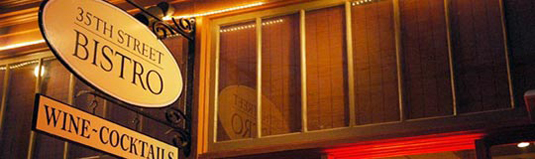

35th St. Bistro : Fremont, Seattle

about
food
wine
reviews
newsletter
events
info
Subscribe to the Newsletter
If you would like to receive our newsletter via email, please write to:
subscribe@35bistro.com.